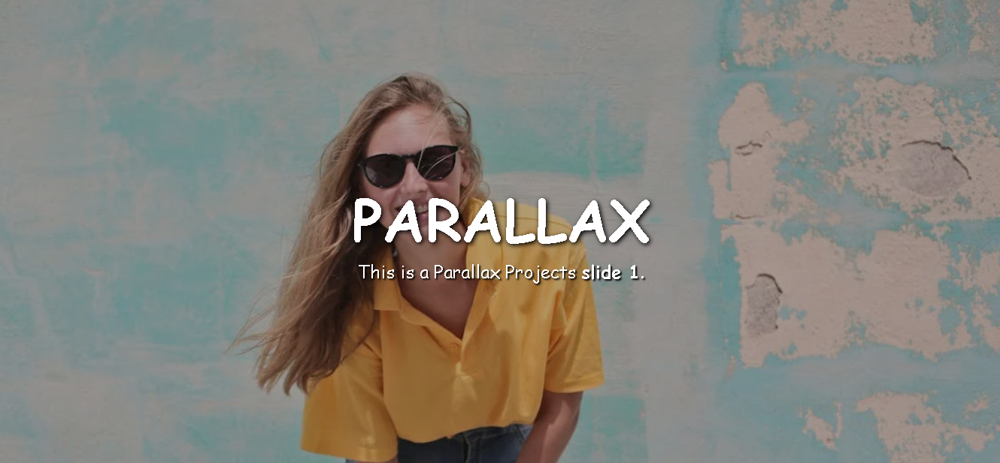

About Me
Hello! I'm a passionate Frontend developer . I love to create interactive & responsive Frontend .
Skills
- HTML,CSS,JS,PHP,MYSQL
- ReactJs
- Data structures & algorithms
- C++ & C languages
Parallax Website
By HTML & CSS
A parallax website is a design approach that creates an immersive experience by making background elements move slower than the foreground content as the user scrolls. This effect adds depth and visual appeal. It is achieved using HTML for structure and CSS for styling. The background-attachment: fixed; property in CSS is key to creating the parallax effect, ensuring the background image remains stationary while content moves. Such websites are popular in storytelling, portfolio designs, and landing pages, providing an interactive feel. However, careful optimization is essential for performance, especially on mobile devices, as the effect can be resource-intensive.
Movie Search Website
This project is a dynamic movie search platform built using HTML, CSS, JavaScript, and API integration. The website allows users to explore and discover movies by searching for their favorite titles Key features include: Real-Time Search: Fetches movie data instantly as users type. API Integration: Utilizes OMDb API to retrieve movie details such as title, release year, genre, ratings, and posters. User-Friendly Design: Clean and responsive layout for seamless user experience on both desktop and mobile devices. Interactive Features: Displays additional information like movie descriptions, trailers, and cast upon selection. This project showcases my skills in front-end web development, including API consumption, responsive design, and interactive UI/UX design.
Contact
Feel free to reach out to me at akashgupta45@gmail.com.